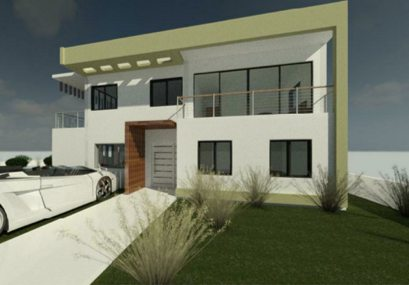
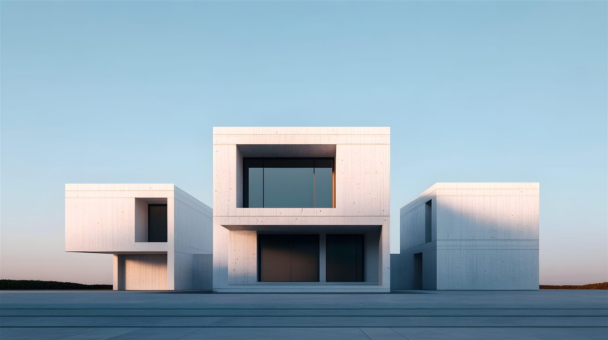
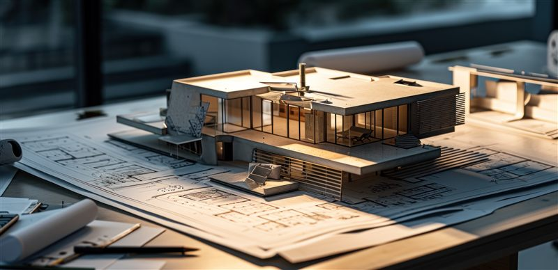
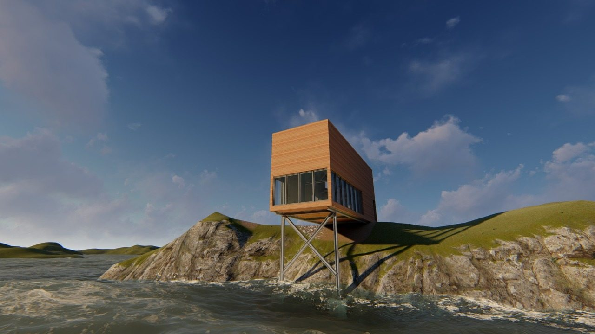
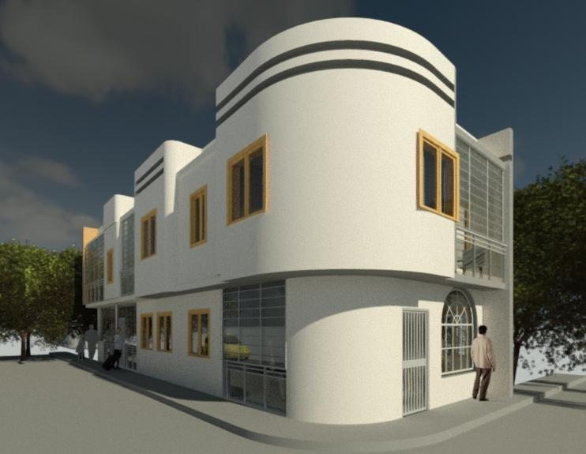
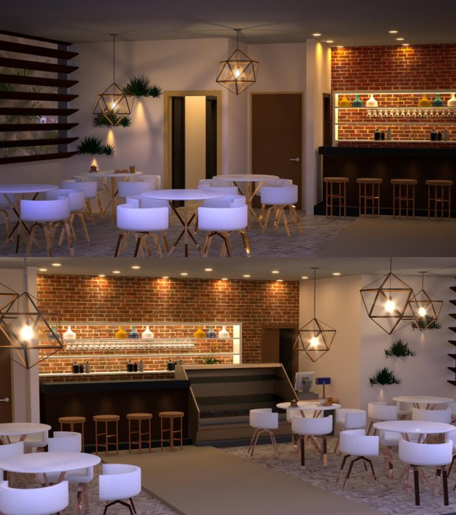
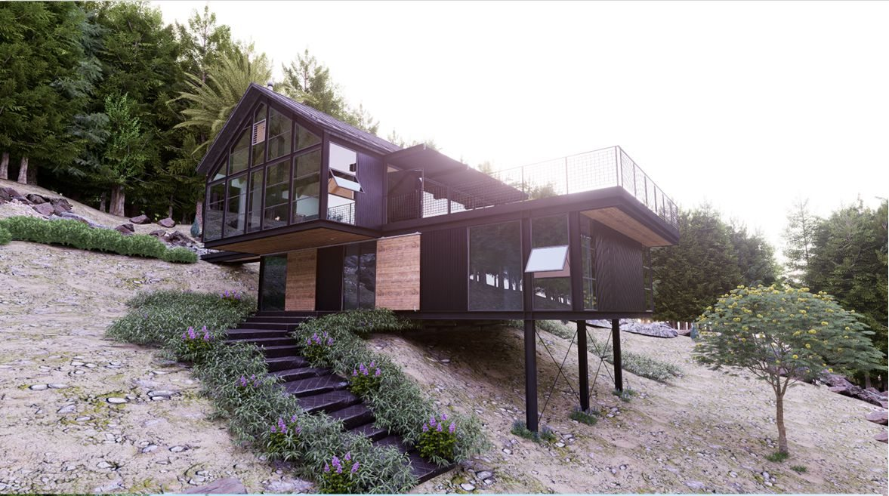
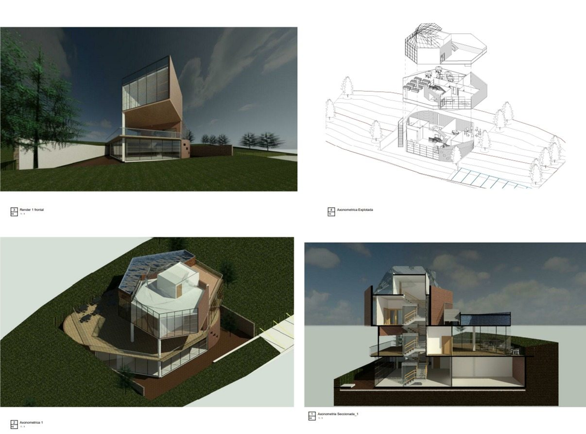
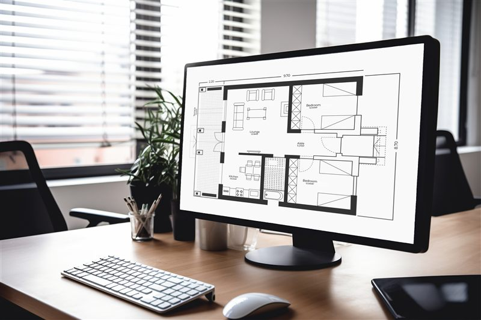
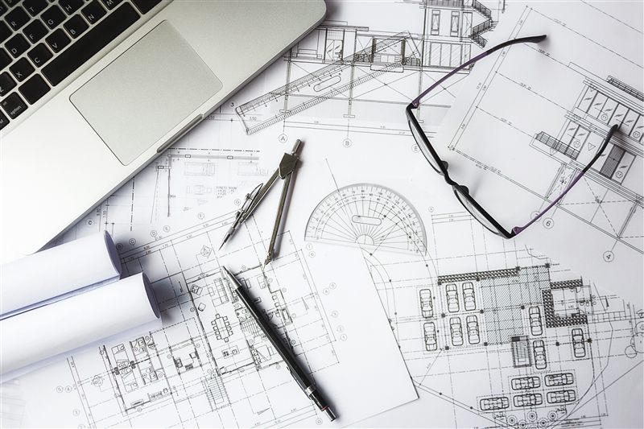

Ver galería · 4 imágenesResidencia Vacacional Cabrera
Revit
Modelado en Revit de una residencia vacacional. Vistas exteriores para explorar la vivienda, sus terrazas y espacios abiertos.

Rosa Dilia Peralta · Arquitectura
Diseño con intención.
De la primera idea a un espacio propio.
La arquitectura empieza por imaginar cómo quieres vivir un lugar.
Trabajo contigo para transformar esa idea en una solución a través del diseño, la planificación y una asesoría cercana. Aporto experiencia y criterio a proyectos de viviendas, remodelaciones, interiorismo y espacios públicos.
Hablemos de tu idea
Una idea con dirección
Concepto, forma y espacio
Un proyecto que puedes imaginar
Planos, modelado y representación
Una selección de proyectos, modelos
y exploraciones de visualización 3D.

Ver galería · 4 imágenesRevit
Modelado en Revit de una residencia vacacional. Vistas exteriores para explorar la vivienda, sus terrazas y espacios abiertos.

Ver galería · 4 imágenesLumion
Exploraciones de visualización arquitectónica con Lumion. Distintas atmósferas, iluminación y relaciones con el paisaje.

Ver galería · 3 imágenesRevit
Representación arquitectónica en Revit. Tres perspectivas para recorrer la fachada y comprender el volumen del edificio.

Ver galería · 1 imagenModelado 3D
Modelado de un espacio de restauración. Una aproximación a su distribución, mobiliario e iluminación interior.

Ver galería · 2 imágenesD5 Render
Visualización con D5 Render a partir de un modelo de 3D Warehouse. Un estudio de luz, materiales y entorno.

Ver galería · 1 imagenModelado BIM
Lámina de modelado BIM con vistas del conjunto, representación espacial y desarrollo del modelo.

Diseño de viviendas y espacios de trabajo, desde el inicio del proyecto hasta remodelaciones, interiorismo y ampliaciones. Soluciones que se adecúan a lo que necesitas.
Planificación, remodelación y diseño de edificios públicos y privados, con experiencia en proyectos para la administración.
Diseño y planificación de parques y estacionamientos públicos y privados, considerando la relación entre las edificaciones y su entorno.
Modelado y renderización para representar tu proyecto, explorar su forma y facilitar su presentación y comercialización.
Un concepto claro, un desarrollo cuidadoso
y una visión compartida del proyecto.

Comprender lo que tienes en mente y definir el concepto que dará dirección al diseño.
Desarrollar el esquema, el anteproyecto y los planos con asesoría y planificación.
Representar la propuesta con modelos tridimensionales y renderizaciones para visualizar el espacio.